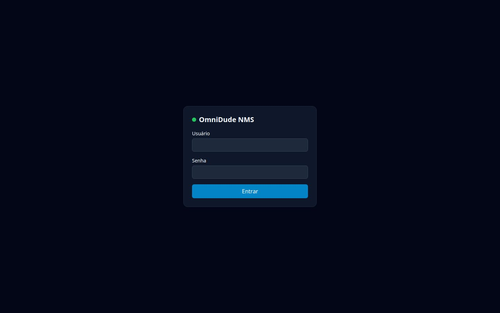
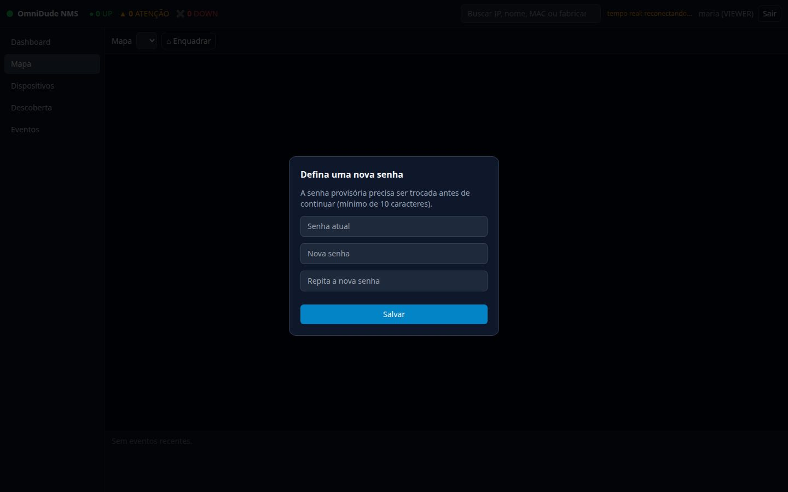
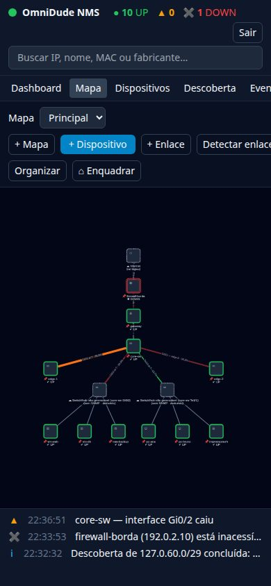
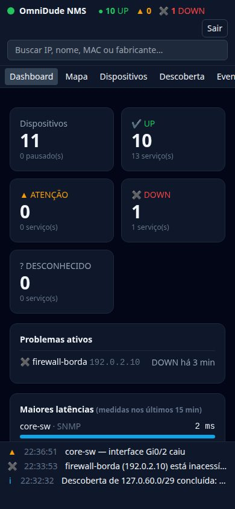
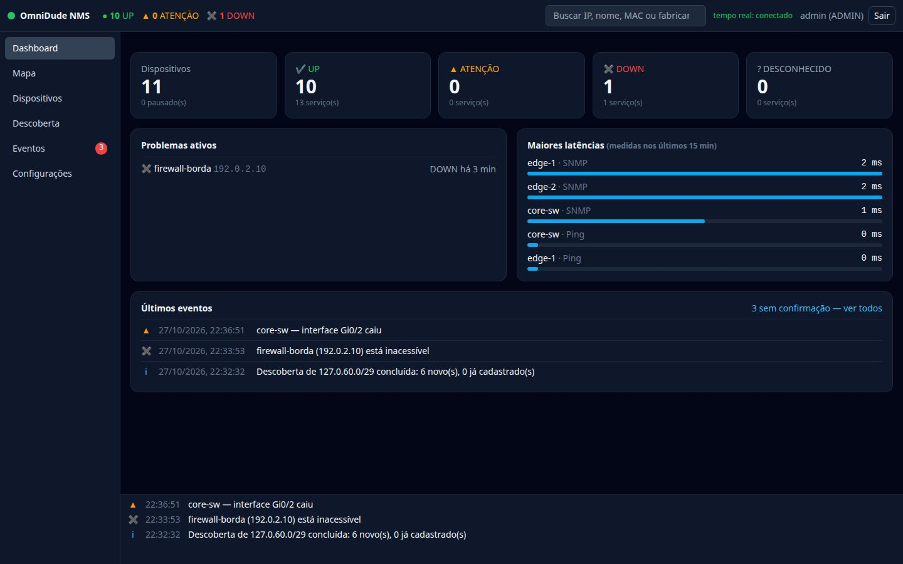
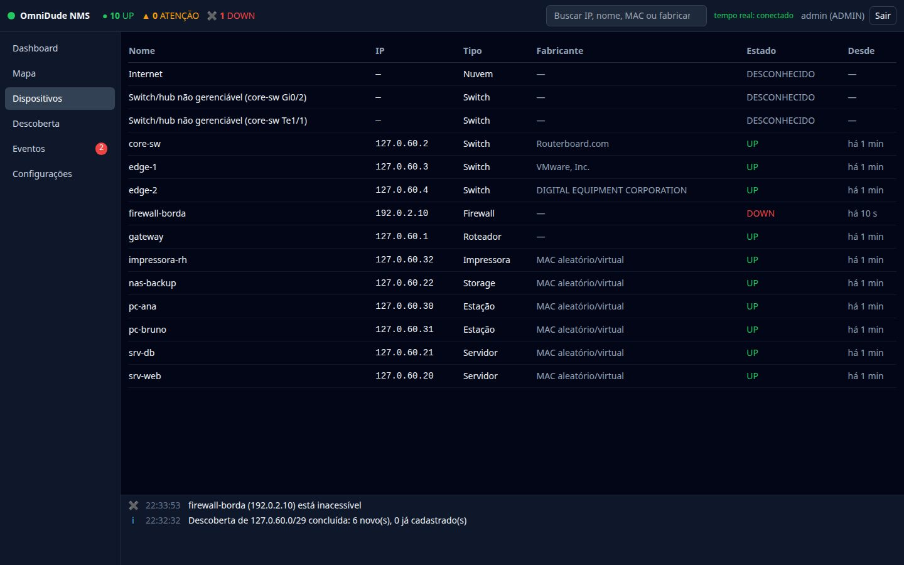

Entrar#
Abra o endereço do servidor (http://127.0.0.1:8080 na própria máquina) e entre com o usuário e a senha.


Se a senha for provisória (a gerada no primeiro acesso, ou a de um usuário recém-criado), o sistema pede uma nova antes de continuar. A senha precisa ter ao menos 10 caracteres.


Após 5 tentativas erradas para o mesmo usuário vindas do mesmo endereço, esse par fica bloqueado por 5 minutos. O bloqueio é por usuário e origem, então um terceiro não consegue trancar a sua conta de outro lugar.
Conhecer a interface#
 1
2
3
4
5
6
7
8
1
2
3
4
5
6
7
8
core-sw aberto à direita.- Resumo e conexão. Contagem de dispositivos UP, em atenção e DOWN, e o estado do canal em tempo real.
- Busca. Encontra por IP, nome, MAC ou fabricante e centraliza o dispositivo no mapa (Enter).
- Usuário. Quem está logado e o botão Sair.
- Menu. Dashboard, Mapa, Dispositivos, Descoberta, Eventos e (só ADMIN) Configurações.
- Barra do mapa. Escolha do mapa, + Dispositivo, + Enlace, Detectar enlaces, Publicar, Organizar, Enquadrar.
- Mapa. Os dispositivos e enlaces. Arraste, clique e use a roda para aproximar.
- Inspetor. Abre ao clicar num nó: serviços, identidade, interfaces e gráficos.
- Faixa de eventos. Os eventos mais recentes, sempre visíveis.
Em telas estreitas o menu vira uma barra horizontal e o inspetor ocupa a tela toda.




De zero a uma rede monitorada#
- Cadastre um perfil SNMP (se os equipamentos tiverem SNMP). No formulário de dispositivo, Perfis… abre o gerenciador. Veja Perfis SNMP.
- Rode a descoberta. Em Descoberta, informe a faixa (por exemplo
192.168.1.0/24), marque a confirmação de autorização, escolha o perfil e clique em Iniciar varredura. Revise e importe. Veja Descoberta de rede. - Ou cadastre à mão: Mapa → + Dispositivo (Mapa e dispositivos).
- Leia as interfaces. Selecione um equipamento SNMP e use Ler via SNMP no inspetor.
- Detecte os enlaces. Detectar enlaces propõe as ligações; confirme as corretas (Topologia).
- Marque monitorar nas interfaces cujo tráfego você quer ver. A primeira taxa aparece na segunda leitura, cerca de 1 minuto depois.
- Configure os alertas em Configurações → Notificações (Eventos e notificações).
Áreas do menu#
Dashboard#
Visão geral para consultar de relance: contagem por estado, problemas ativos, as maiores latências dos últimos 15 minutos e os últimos eventos.


Mapa#
A área principal. Veja o capítulo 4.
Dispositivos#
Uma lista com nome, IP, tipo, fabricante, estado e há quanto tempo está nele. A lista inclui nós lógicos e deduzidos. É a melhor visão para conferir o inventário.


Descoberta e Eventos#
A descoberta varre faixas de rede; Eventos lista o que mudou, com filtro por gravidade e confirmação (ack). O contador vermelho ao lado de Eventos mostra os não confirmados.
Atalhos e dicas#
| Ação | Como |
|---|---|
| Localizar um dispositivo | Digite na busca do topo e tecle Enter. |
| Aproximar ou afastar o mapa | Roda do mouse ou gesto de pinça; ⌂ Enquadrar mostra tudo. |
| Fechar o inspetor | O × no canto, ou clique no fundo do mapa. |
| Cancelar o modo de enlace | Esc. |